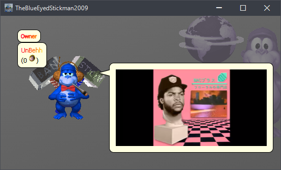
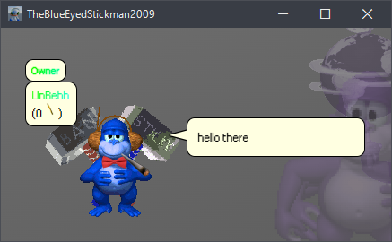

Return
1.3.2
- Added /myinstants, it will let you embed Myinstants sounds so you can use it as a soundboard. It will work like this. /myinstants [ID].
- TTS now says the full meanings of Idk, Idc, Stfu, Ts, Ooo, Pmo, Idgaf, Idfk, Idfc, Yk, Jk, BW, Wtf, Wth, and Ik.
- Anonymous has been renamed to User.
- YouTube videos now autoplay.
- Polls now dissapear after 15 seconds.
- Added some System Requirements.
1.3.1
- Added Browser Notifications for when someone gives you coins, or when there's a poll. Make sure you click "Allow" so you nothingburgers don't complain that you don't get any notifications.
- (Forgot to document this) Made the Jukebox Maintenance more fun.

1.3.0D
- Blacklist websim
- Blacklist more n word variations
- Fix nuke holy shit 3 updates in 1 day
1.3.0C
- ACTUALLY FIX THE JUKEBOX applets should now work. jukebox revamp soon!
1.3.0B
- Fix applets. The warning is now on the jukebox itself. idk why the applets menu can't handle text instead of buttons
- REMOVE THE NAZAR JOKE
- Added webhook to BWI server, speaking of BWI server...
- BWI Discord Server is now the main BWIWorld Discord Server! BonziCORD will be demolished soon, since BWI Discord Server and BonziCORD merged
1.3.0A
- Fix colors.
- REMOVE THE NAZAR FACT
- Make /alert high king only >:)
1.3.0 - The Customization Update
- Added BonziUPLOAD Intergration (Currently in Demo).
- Added /twitter, this will let you embed Twitter posts and much more.
- Added a Notice in Games for Firefox Users that Games can also be slow in Firefox, even if your PC is beefy.
- Added New Colors: Gray, Magenta, Indigo, Teal, Maroon, Gold, Violet, and Shadow.
- Updated Colors: Yellow, Red, Cyan, Orange, Pink.
- Added better N-word blacklisting.
- Added BonziUPLOAD to whitelist.
- Added Google Gravity to Games.
- Added Fleabag VS. Mutt to Games.
- Added Infinite Craft to Games.
- Fixed the Audio size.
- Removed the Frameborders in all iframes.
- Removed BW.int and BonziTV from applets because of Ideal (The Creator)'s drama.
- Removed Slither.io from Games. Due to it only having HTTP, and iframes don't trust HTTP, only HTTPS.
- Removed the Mute Button in Games due to issues.
1.2.11
- New insult: Call a Stupid Bitch.
1.2.10
- New login logo. Credits to Selever for the idea.
1.2.9
- Webhook icon fix
1.2.8
- Temporarily replaced BW 2 with BonziWORLD.int, since it's down, rip!!! (TEMPORARY)
1.2.7a
- Added 2 new games (Slither.io, and Cookie Clicker).
1.2.7
- Add BonziTV.
- Add new pope color of mine lol.
- Add better, less shitty white color.
1.2.6
- fixed video embeds
1.2.5
- fixed message bubble overflow
1.2.4
- de-fuck speech bubbles


1.2.3
- new security, which i will not tell how it works so exploiters have a hard time figuring it out :DDDD
- just a boring ass security update
1.2.2
- Added /audio, this will let you play any audio from whitelisted sources. Here's how it works /audio [LINK], you can also use some attributes, for example /audio [LINK]?mute (This will mute the audio), /audio [LINK]?loop (This will loop the audio).
- Added /spotify, this will let you embed ANY Spotify song. Here's how it will work. /spotify [Song ID] and then it will embed to your bubble.
- Increased the size for Bubbles. To make /spotify work, we had to increase the size for the bubble.
- You can now turn off the sound in Games, if you don't want it.
1.2.1
- Added SRB2 to games
- add new security. not telling how it works :DDDDD
1.2.0 - The Games Update
- Added Games as an Applet. (Minecraft, Pac-Man, Happy Wheels, etc.)
- Removed the Internet Browser due to it being unnecessary.
- Changed the Coin sound.
1.1.1
- XP scrollbars added.
- XP buttons are better now.
1.1.0 - the behh behh behh update
-
update i released in parts because i forgot to log these in the changelog, so here we are. but hey at least first major update since 1.0.0, right? right??
- Add coin gifting, gambling, and password UIs
- window X button is better
- Added back the old applet called "BonziWORLD 2" which is basically the same thing as the old one but with a different name and a different server
- make passwords save to JSON, because using JS for it sucks man
- blacklist goworld and jayno's horrible server
- add message deletion in logs for low kings and above (high kings if u ban someone their messages get auto deleted, lol)
- add larp detector
- king logins are logged now. YAY HAHA!
- logs now have crosscolor icon
- pope color changed... TWICE!
- king color changed
- add alert translator™
- add bonzi.gay rainbow
- add security, albeit that likely was when we still logged changes
1.0.9
- Previous feature as 1.0.8 but join anim plays lol.
1.0.8
- Kings and Popes (aka me sticky lolololloolol) can now join with their color automatically. yayyy.
1.0.7
- Added shirt in shop lol.
1.0.6
- Fixed a bug where the login card would just simply look off on the Windows XP theme.
1.0.5
- Black theme is now ACTUALLY fixed. yayyyy
1.0.4
- Fixed black theme. should've tested the update...
1.0.3
- Fixed the other themes
1.0.2
- Fixed chatbar on the Windows XP theme. Now it is more consistent with the other themes! yayyyy
- Added bonzi.gay rainbow text
- Owner has rainbow text
1.0.1
- Added a changelog, which you are reading right now!
- Added a link to the changelog on the homepage
- Replace all remaining BIAWorld mentions with BWIWorld.
- Fix elon, kamala and bucket. replace crown with chain. BECAUSE CROWNS WILL BE KING ONLY ok enough